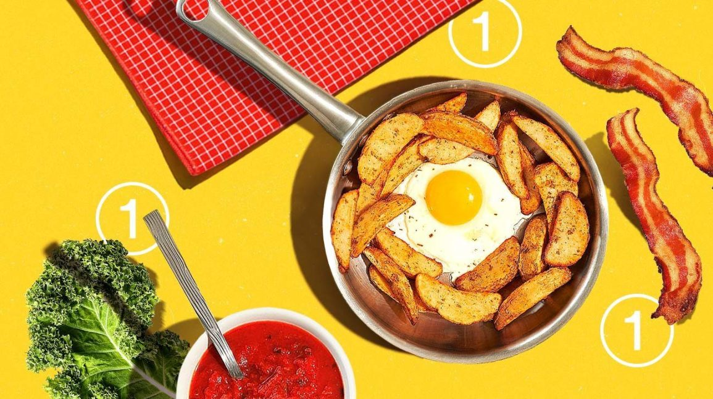

Topic Description:
Whether someone is a busy working man, a parent supporting a whole family, or any college student living on his own, home cooking and preparing food is always a tough process. Cooking itself is already such a pain, and it even takes longer to search through the market and prepare for the ingredients. Especially for people returning home after a whole day working or studying, they may have limited time and energy to decide what to cook, among so many choices of recipes, and spend time shopping the ingredients they need. Therefore, it will definitely be necessary to provide a functional application targeted on those who have no time looking through the bulky recipes each day, save their time and bring the dishes they like to the table.
The existing applications designated to help people cooking are still in lack of some important features the users may need. One of the very intelligent cooking websites that inspire us is the Supercook which allows users to enter the ingredients they have in the fridge and generate ready-to-cook recipes. It is quite easy to use, but the lack of features that allows people to find recipes within their limited time frame is one issue which this type of application always has. For many busy businessmen and students, the recipes it generates that require a long time cooking cannot meet their needs well. Other typical cooking websites include Foodgawker, and Skinnytaste which provides healthy cooking ideas for people on diet. But again, some of them are still unfilterable by either time or ingredients, and most do not support ingredients purchasing which could be highly convenient. Therefore, we brainstorm several possible applications that may solve cooking problems in different ways. It may have a better filtering functionality, a community sharing feature, or an ingredients purchasing option. Overall, we want to promote the exchange and inspiration for cooking ideas and bring people better experiences of cooking!

Potential Web Applications:
- Recipe Community:
The overarching goal of the recipe community app will be sharing every user’s own recipes to the whole community so that other people can have more ideas on what they want to cook. People can see the latest and most popular shared recipes on this app. It also has recipes sorted by locations or countries, for example, Mexican Food, American Food, Italian Food, etc. When the user finds the recipe they like, they can add the ingredients in that recipe into their shopping cart and purchase it online, and the online grocery stores will deliver the ingredients to users, or the users can choose to pick them up at a local store. The users can save time on shopping for the ingredients they need.
- “Mood” Recipes:
The overarching goal of the “mood” recipes application will be recommending recipes to the users. It will let the users answer several questions, and the system will automatically recommend recipes to them based on the answers. For example, on a cold winter night, you and your family members are celebrating for your graduation, and you want to eat some warm Asian food, the system will be likely to recommend you Chinese Spicy Hotpot, Japanese Sukiyaki, Korean Budae Jjigae, and some similar food which can make you warmer, good for sharing. The system can make the best choices based on your occasions, the number of people, the current weather, and so on. The users can have the most appropriate food on each specific day and time.
- Cook With Available Ingredients
The overarching goal of the cook with the available ingredients app is giving the users some ideas to cook with the ingredients they have at home. Users can put the available ingredients and available cooking time into the system and get a list of recipes they can choose from. For example, a user has ground beef, beef brisket, lasagne, tomatoes, potatoes, eggs, and butter at home, and if he only has 5 minutes to cook, the system will recommend you to cook over-easy eggs, scrambled eggs, and some other simple dishes, but if you have 2 hours to cook, the system will recommend you to cook beef lasagne, braised beef brisket with tomato, and some other more complex recipes which may take longer time for preparing and cooking. The users can cook by using the ingredients they currently have within their time frames.